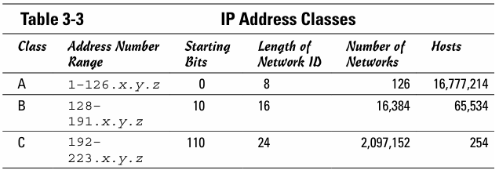
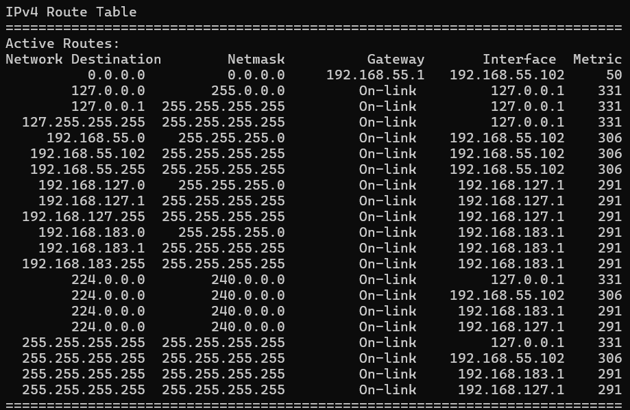
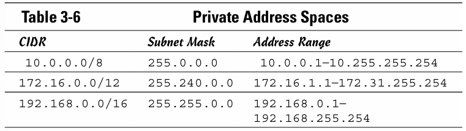

Task 3 - Network Layer
Mikołaj Cichocki 257272, Szymon Machała 257281 All rights reserved 2025
Theoretical part
IP addresses
An Internet Protocol (IP) address is the unique identifying number assigned to any device connected to a computer network that uses the Internet Protocol. IPv4 addresses are 32-bit and IPv6 addresses are 128-bit. An IP address is not random. The creation of an IP address has the basis of math. The Internet Assigned Numbers Authority (IANA) allocates the IP address and its creation. Addresses are divided into 3 classes.
Internet protocol enables communications between networks. It has two parts:
- Network part identifies the network
- Host part identifies a specific device
Network classes
The construction of the IP address consisting of 2 parts implies the need to classify all addresses into groups by length of the network part. Say, it would be fixed 50/50: 16 bits for network and 16 bits for hosts. It would mean that the whole internet can have 65536 networks with 65536 hosts each. That would not make any sense. Thus, the classes are the solution to this problem. Actually, classes alone do not serve as the complete solution, because subnetting fully enables the capacity of 32-bits length address.
Network subnets
Subnetting is a technique that allows to use IP address more efficiently and to create networks that does not have to rely on an address from any class. It means that you can specify the length of host part of your choice. Effectively, you can decide how many hosts can be connected to the network.
The router must be told which portion of the host ID should be used for the subnet network ID. It is determined by subnet mask. Those IP address bits that represent the network ID are represented by a 1 in the mask, and those bits that represent the host ID appear as a 0 in the mask.
Let's say the original address is 192.168.1.0/24 11111111 11111111 11111111 00000000. We can divide it by transferring some bits from host part to network part. Say 2 bits. New subnet mask is /26 and we can create 2^2=4 subnets. Each subnet can have 2^6-2=62 hosts.
Default gateway & broadcast
Default gateway is the address of a device (usually a router) through which a subnet communicates with devices outside the local subnet. It serves as the exit point for all packets destined for addresses beyond the local network, forwarding any traffic not addressed to a device within the subnet.
Broadcast address is used to transmit to all devices connected to a network.
Routing table
Each router has to decide where a packet should be forwarded. Because those are connected usually to more than one network, they have to be able to somehow make decisions. Routing tables are the soulution. These tables list all networks for which routes are known. When a router receives a packet, it examines the destination IP address and looks up into its Routing Table to figure out which interface packet will be sent out.
- Network Destination - target network
- Netmask - subnet mask of network destination
- Gateway - (next hop) the next router to send the packet to. Says On-link if it's directly connected
- Interface - addresses of current device's interfaces to send through e. g. network adapter
- Metric - a cost value to prefer one route if they match equally well
Private and public addresses
Private address is used for communication within a LAN. They are not visible on the internet (normally). Several sets of addresses are set aside for this purpose.
Public address is used to communicate outside the network. It is usually given by Internet Service Provider.
Network address translation
Firewalls use network address translation to hide the private IP address of a host from the outside world. NAT device uses its private address to represent the host to the internet. When packets cross the firewall, the NAT device translates the private IP address to the public IP address and vice versa.
It saves the available pool of private addresses, because a NAT device can use a single public address for more than one host. It keeps track of outgoing packets and it can match incoming packets with the correct host.

Sources
W. Brand - Networking for dummies 6th edition